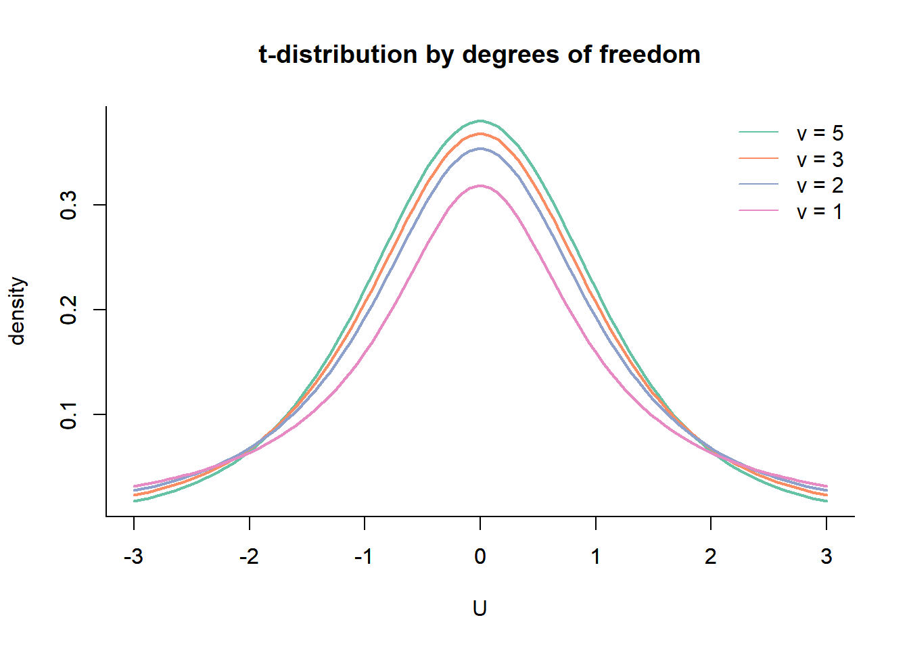
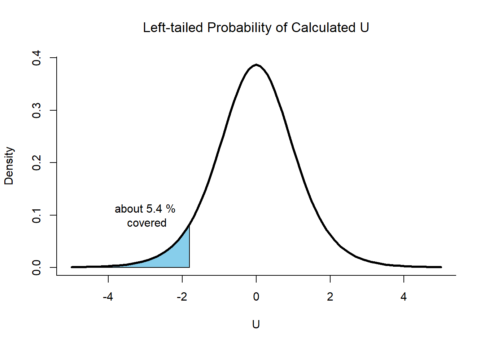

Unit 5 Z-tests, t-tests, and Confidence Intervals
5.1 Starting with Z
The standard normal distribution, as discussed in Unit 3, is also called the Z Distribution because the process of standardization yields a random variable commonly called \(Z\).

5.2 Doing a Z-test
Now that we have been introduced to the Z Distribution and the hypothesis testing framework, we are now ready to answer questions like, “Is there evidence to conclude that the mean of a population is equal to a certain number?”
5.2.1 Using the Z Statistic
Suppose a pasta company claims that the net weight of one pack of pasta is 100 g, with a standard deviation of 0.5 g. You are hired by this company to do statistical analysis for them, specifically to test whether the 1 million packs of pasta produced this week meet their 100-gram claim. You cannot weigh all the 1 million packs individually because reopening them would cost the company money, and it would obviously take you a very long time to weigh each pack. The manager of the manufacturing division gives you 500 packs of pasta to work with and hopes that with your statistical knowledge, you will be able to prove or dispute their claim. What should you do?
The problem above can be solved using a simple hypothesis setup:
\[ \begin{aligned} H_0 &: \mu = \mu_0 \\ H_1 &: \mu \neq \mu_0 \end{aligned} \]
where \(\mu\) is the true mean of the population, and \(\mu_0\) is the reference mean. In the problem, the reference mean is 100 g, since that is what the company claims. The population, whose true mean is \(\mu\), is the batch of 1 million packs produced during the week. Using statistical jargon, we would like to test whether the population mean is indeed 100 g using the sample of 500 pasta packs. Recall that the sample mean, \(\overline{X}\), is an estimate of \(\mu\). Hence, taking the mean of the 500 packs of pasta would give an estimate of the true mean weight of the batch produced. \(\overline{X}\) is simply the arithmetic average of the weights of the 500 packs, i.e., \(\overline{X} = \sum_i^{n}\frac{x_i}{n}\). To test this hypothesis, we can take the difference between \(\overline{X}\) and \(\mu_0\) and check if it is large enough to say that the population mean \(\mu\) is not 100 g. Note that the direction of the difference (i.e. whether it is positive or negative) does not matter as implied by the hypotheses. Thus, from Unit 4, we can reject the null hypothesis when:
\[|\overline{X} - \mu_0| \geq c\]
where \(c\) is the critical value. At this point, one might be tempted to choose an arbitrary value for \(c\), say 10 or 15. That would undermine the integrity of the procedure performed. Recall from the previous discussion that the appropriate \(c\) is determined by first setting an \(\alpha\).
For this problem, assume that the company would like to be 95% sure that the batch produced meets their 100-gram claim. Given this 95% confidence level, \(\alpha\) would have a value of 0.05 since we can only allow incorrect rejection of \(H_0\) 5% of the time. This is a two-tailed test and hence, the critical value to be used should correspond to \(\alpha/2\).
What is the appropriate critical value to use? We have 500 samples, a sufficiently large number, and it would be safe to say that the samples are independent. Since the assumptions are met, we can use the Central Limit Theorem and assume that \(\overline{X}\) is normally distributed. All that needs to be done is standardize \(\overline{X}\) to get the corresponding Z statistic and compare that with the critical Z-score.
To standardize, the formula for the Z-score from Unit 3 is used. Note that this time, the variable to be standardized is \(\overline{X}\), not \(X\), and hence the appropriate mean and standard deviation must be used. We know that \(\overline{X} \sim N(\mu, SE = \sigma/\sqrt{n})\) and so:
\[ \begin{align} Z &= \frac{\overline{X} - \mu}{SE} \\ &= \frac{\overline{X} - \mu}{\sigma/\sqrt{n}} \\ &= \frac{\sqrt{n} \cdot \big(\overline{X} - \mu\big)}{\sigma} \end{align} \]
To find the critical Z-score corresponding to \(\alpha/2\), one would need to look at the cumulative distribution function or CDF of the Z distribution. In general, the CDF gives the probability that a random variable is less than or equal to a certain value. Formally, the critical Z-score is computed as
\[c = \Phi^{-1}(1-\alpha_0/2) \cdot \frac{\sigma}{\sqrt{n}}\]
where \(\Phi\) is the CDF of the standard normal distribution. Thankfully, because the standard normal distribution is commonly used, Z tables and computers have made this much easier. For the pasta problem, the Z-score for a two-tailed test corresponding to \(\alpha = 0.05\) is 1.96. Therefore, we reject the null hypothesis if the calculated Z statistic, \(Z\), is \(< -1.96\) or \(> 1.96\), which corresponds to the shaded regions below:
5.2.2 p-values
P-values can also be used to decide whether or not the null hypothesis should be rejected. This can be done by using the standard normal distribution to get the cumulative probability, \(\Phi(Z)\), which corresponds to the \(Z\) statistic we have computed from \(\overline{X}\). We reject the null hypothesis if \(\alpha \leq 1-\Phi(Z)\).
5.3 Student’s t-distribution
The Z-test assumes that the true variance of the population is known, which is not always the case. This renders the Z-test unusable. For these situations where the variance is unknown, we use the t-test, which is based on the t-distribution.
The t-distribution, originally called Student’s t-distribution (from the pseudonym “Student” of the inventor, William Sealy Gosset), has an extra parameter that describes the shape of the distribution. This parameter is called degrees of freedom, \(\nu\). The graph below shows how different values of \(\nu\) affects the shape of the distribution.

5.4 A Simple t-test Example
Just like the z-test, we can also test if the mean of a sample is significantly different from the population mean. For example, for a two-tailed setup like:
\[ \begin{aligned} H_0 &: \mu = \mu_0 \\ H_1 &: \mu \neq \mu_0 \end{aligned} \]
We can then calculate for the variable \(U\):
\[U=\sqrt{n} \cdot \frac{|\overline{X} - \mu_0|}{\hat{\sigma}}\]
Notice that there is now a new variable, \(\hat{\sigma}\). This represents the sample standard deviation. In previous sections, the sample standard deviation was represented as \(s\), and these two notations can be used interchangeably. In general, the caret (\(\hat{}\)) is used to denote an estimate of a population parameter, which in this context is usually the sample statistic.
The sample standard deviation \(\hat{\sigma}\) can be calculated as:
\[\hat{\sigma}=\sqrt{\frac{\sum_i^n{(X_i -\overline{X})^2}}{n-1}}\]
Like the Z-test, we reject \(H_0\) if the statistic \(U\) is greater than or equal to a critical statistic \(c\), i.e. when \(U \geq c\) given that \(\mu = \mu_0\). The critical statistic \(c\) is computed by \(T^{-1}_{n-1}(1-\alpha/2)\) (for a two-tailed test) where \(T_{n-1}\) is the cumulative density function of the \(t\)-distribution for \(n-1\) degrees of freedom. Below is the \(t\)-distribution with 5 degrees of freedom:
5.5 Tests for Composite Hypotheses
5.5.1 Rejection Regions
In obtaining the \(Z\)- or \(t\)-statistic for a composite hypothesis setup, the following formula is used:
\[Z = \sqrt{n} \cdot \frac{(\overline{X} - \mu_0)}{\sigma}, \hspace{10mm} U = \sqrt{n} \cdot \frac{(\overline{X} - \mu_0)}{S_X}\]
Comparing this with the equation for a simple hypothesis setup, notice that the only change here is the absence of the absolute value symbol. Because this is a one-tailed test, we now care about the direction of statistic. For a left-tailed test, we reject \(H_0\) if the test statistic \(U \leq c\), while for a right-tailed test, we reject \(H_0\) if \(U \geq c\).
Figure 5.1: Rejection Region for a Left-tailed Test
Figure 5.2: Rejection Region for a Right-tailed Test
5.5.2 Calculating p-values
For the one-tailed test, we calculate the p-values based on the alternative hypothesis. For example, if we have \(H_1:\mu < \mu_0\), then we are to find:
\[ \begin{aligned} \phi(Z) \quad &\text{(for z-test)} \\ T_{n-1}(U)\quad &\text{(for t-test)} \end{aligned} \]
On the other hand, for \(H_1: \mu > \mu_0\):
\[ \begin{aligned} 1-\phi(Z) \quad &\text{(for z-test)} \\ 1-T_{n-1}(U)\quad &\text{(for t-test)} \end{aligned} \]
Note that \(\Phi\) and \(T\) are the cumulative distribution functions or CDFs, and they always give the areas of the left tail. Visualizing the rejection regions will explain why we subract the area from 1 in a right-tailed test.
5.6 A Two-Sample t-test
There are situations when we want to compare two groups and test if their population means are different, or if one is greater than (or less than) relative to the other. In other words, instead of comparing \(\mu\) to a reference value \(\mu_0\), we are now comparing two population means - \(\mu_X\) and \(\mu_Y\).
For a two-sampled test, we now have a new way of calculating the t-statistic. incorporating the new variables \(\overline{Y}\) and \(\hat{\sigma_Y}\). Below is the formal definition of a two-sample t-statistic:
\[ \begin{aligned} U = \frac{(m+n-2)^{1/2}(\overline{X} - \overline{Y})}{(\frac{1}{m} + \frac{1}{n})^{1/2}(S^2_X+S^2_Y)^{1/2}} \end{aligned} \]
\(\overline{X}\) and \(\overline{Y}\) are the respective sample means and \(S_X^2\) and \(S_Y^2\) are the residual sum of squares or RSS, defined as \(S_X^2 = \sum_i^m(X_i - \overline{X})^2\) and \(S^2_Y = \sum_j^n(Y_j - \overline{Y})^2\). We use the t-distribution with \(m + n - 2\) degrees of freedom for inference in this case.
5.7 Hypothesis Testing Examples
5.7.1 Problem 1
The manufacturer of a certain automobile claims that under typical urban driving conditions, the automobile will travel on average at least 20 miles per gallon of gasoline. An owner of one of these automobile notes the mileages that she has obtained in her own urban driving when she fills her automobile’s tank with gasoline on nine different occasions. Her records show the following, in miles per gallon: 15.6, 18.6, 18.3, 20.1, 21.5, 18.4, 19.1, 20.4, and 19.0. Test the manufacturer’s claim by carrying out a test at a significance level \(\alpha\) = 0.05.
To solve this problem, we first need to formulate the hypothesis that is being asked. Since the manufacturer claims that the car runs on “at least” 20 miles per gallon, we can say that the null and alternative hypotheses are:
\[ \begin{aligned} H_0 &: \mu \geq 20 \\ H_1 &: \mu < 20 \end{aligned} \]
We do not have information about the population variance and thus we use a t-test. The next step would be to calculate the t-statistic. The sample mean in this case is simply:
\[ \begin{aligned} \overline{X} &= \frac{\sum^{n}_{i}X_{i}}{n}\\ &= \frac{(15.6 + 18.6 + 18.3 + 20.1 + 21.5 + 18.4 + 19.1 + 20.4 + 19.0)}{9} \\ &= 19 \end{aligned} \]
The sample standard deviation is calculated as:
\[ \begin{aligned} \hat{\sigma} &= \frac{\sum_{i}^{n}(X_i - \overline{X})^2}{n-1}\\ &= \frac{\sum_{i}^{n}(X_i-19)^2}{n-1} \\ &= 1.66 \end{aligned} \]
Putting this all together, we calculate the t-statistic to be:
\[ \begin{aligned} U &= \frac{\sqrt{n} \cdot (\overline{X} - \mu_0)}{S_X} \\ &= \frac{\sqrt{9} \cdot (19 - 20)}{1.66} \\ &= -1.81 \end{aligned} \]
We can decide whether or not to reject the null hypothesis by either calculating the critical statistic or the p-value.
5.7.1.1 Critical Statistic
The critical statistic is the t-statistic that corresponds to \(1 - \alpha\), that is, getting the value of \(T^{-1}_{n-1}(1-\alpha)\) where \(T^{-1}_{n-1}\) is the inverse of the CDF with \(n-1\) degrees of freedom. The degrees of freedom here is \(\nu = n-1 = 8\).
In Microsoft Excel this can be done using the function T.INV with arguments probability and deg_freedom. For probability \(alpha_0 = 0.05\), and 8 degrees of freedom, we get \(c = -1.86\). Since \(U = -1.81 > -1.86\), we do not reject the null hypothesis and conclude that the evidence gathered by the owner supports the manufacturer’s claim that the automobile runs at 20 mpg on average.
5.7.1.2 Calculating the p-value
We get the p-value by using the CDF of the t-distribution \(T_{n-1}(U)\). This can achieved in Microsoft Excel by calling the function T.DIST with arguments X, which is the statistic for which we evaluate the CDF (which is \(U\) in this case), deg_freedom, and cumulative which tells the function if we want to add up the densities of the distribution. Since the function is by default left-tailed, the densities are added up from left to right. This is shown below:

Since we want to test if there is enough evidence to reject \(\mu \geq 20\), it makes sense to get the cumulative probability from the left. It would mean that highly negative values for the statistic are highly unlikely since going from left to right correspond to increasing probabilities.
For this problem, we calculate \(p = 1 - T_{n-1}(U) = 0.054\). Since \(p > \alpha_0\) we do not reject the null hypothesis at \(\alpha_0 = 0.05\).
5.7.2 Problem 2
As a marketing executive, you are curious if a social media marketing strategy would be more effective than the current paid media marketing strategy of the retail company. To investigate this, you ran two different marketing campaigns alternately for a total of 12 months. The number of sales was recorded each month as shown below:
| months | Marketing Strategies | Sales |
|---|---|---|
| January | social media | 26 |
| February | paid media | 77 |
| March | social media | 16 |
| April | paid media | 84 |
| May | social media | 79 |
| June | paid media | 96 |
| July | social media | 82 |
| August | paid media | 14 |
| September | social media | 50 |
| October | paid media | 82 |
| November | social media | 35 |
| December | paid media | 36 |
We want to find out if social media marketing (S) is better than paid media marketing (P). The hypotheses can be set up as follows:
\[ \begin{aligned} H_0 &: \mu_{S} \leq \mu_{P} \\ H_1 &: \mu_{S} > \mu_{P} \end{aligned} \]
With these statements, the null hypothesis states that social media marketing is at most as good as paid marketing, while \(H_1\) states that social media marketing generates more sales.
This problem compares two samples, sales due to social media marketing and sales due to paid media marketing. Hence, we use the \(t\)-statistic definition for two samples.
Below are the sample means and standard deviations for both paid media and social media:
| Marketing Strategies | Mean | Standard Deviation | Sum of Squares (S) |
|---|---|---|---|
| social media | 48.0 | 27.6 | 3798.0 |
| paid media | 64.8 | 32.2 | 5196.8 |
Using this information, we then calculate the \(t\)-statistic. Since both marketing strategies were both deployed for an equal number of months during the year, we can say that \(m = n = 6\).
$$ \begin{aligned} U &= {( + )(S2_X+S2_Y)^{1/2}} \
&= {( + )(3,798 + 5,196.8)^{1/2}} \
&= -0.971 \end{aligned} $$
Since we are testing for \(H_0: \mu_{SM} \leq \mu_{PM}\), we reject it if the statistic \(U \geq c\), where \(c\) is equal to \(T^{-1}_{m+n-1}(1-\alpha_0)\). For \(\text{df} = m + n - 2 = 10\), the \(t\)-statistic at \(1 - \alpha\) is equal to 1.81. Since \(U < c\) we do not reject the null hypothesis.
To obtain the p-value, we get the cumulative probability from the cdf \(T_{m+n-2}(U)\). Looking at \(H_0\), we reject positive values and thus it would make sense to get the area of the right-tail, \(1 - T_{m+n-2}(U)\), where a lower probability would mean a very unlikely outcome given the null hypothesis. We get this using the Excel formula = 1 - T.DIST(-0.971, 10, TRUE).
We calculate the p-value as \(0.82\). At significance level \(\alpha = 0.05\), we do not reject the null hypothesis. We visualize this below:
5.8 Confidence Intervals
5.8.1 What are confidence intervals?
Confidence intervals give us a range of plausible values for the population parameter based on results from a sample. The conditions for the CLT must also be met for the confidence interval to be valid.
5.8.2 Constructing a Confidence Interval
The confidence interval for the mean is computed as:
\[\bigg(\overline{X} - c \cdot \frac{s}{\sqrt{n}}, ~ \overline{X} + c \cdot \frac{s}{\sqrt{n}}\bigg)\]
- \(\overline{x}\) is the sample mean
- \(s\) is the sample standard deviation
- \(n\) is the sample size
- \(c\) is the critical statistic
The quantity \(c \cdot \frac{s}{\sqrt{n}}\) is called the margin of error.
The critical statistic can either be a Z-score (\(Z\)) or t-score (\(U\)), depending on which distribution is used for inference. This statistic is related to the significance level \(\alpha\) that was previously set. Recall from Unit 4 that \(\alpha\) or the Type I error rate is the probability of rejecting a true \(H_0\). Increasing \(\alpha\) means increasing the tolerance for making a wrong decision, and so “confidence” in the analysis decreases. This is why the confidence level is computed as \(1 - \alpha\). For \(\alpha = 0.05\), the confidence level is \(1 - 0.05 = 0.95\) or 95%. In computing a 95% CI, the \(Z\)-score corresponding to the confidence level is used. For example, if \(\alpha = 0.05\) and the \(Z\)-distribution is used, the critical Z-score which we will denote as \(z^*\) is the \(Z\)-score corresponding to 0.95.
5.8.3 Interpreting the Confidence Interval
As an example, consider the mileage problem from the previous section. The sample mean \(\overline{X}\) was 19 while the sample standard deviation was 1.6583124. The population variance is unknown, so the t-test was used. The critical \(t\)-score corresponding to \(1 - \alpha = 0.95\) is 1.86, and the sample size is 9. Using these information, we can construct a 95% confidence interval for the true average MPG of the car:
\[ \begin{align} & \bigg(\overline{X} \pm c \cdot \frac{s}{\sqrt{n}} \bigg) \\ &= \bigg(19 \pm -1.86 \times \frac{1.66}{\sqrt{9}} \bigg)\\ &= (19 \pm -1.86 \times 0.5533 ) \\ &= (19 \pm 1.03) \\ &= (17.97, ~ 20.03) \end{align} \]
This 95% confidence interval IS NOT interpreted as: “There is a 95% chance that the true mean is in this interval.” The correct interpretation of a confidence interval is: “95% of similarly constructed intervals will contain the true population mean.”